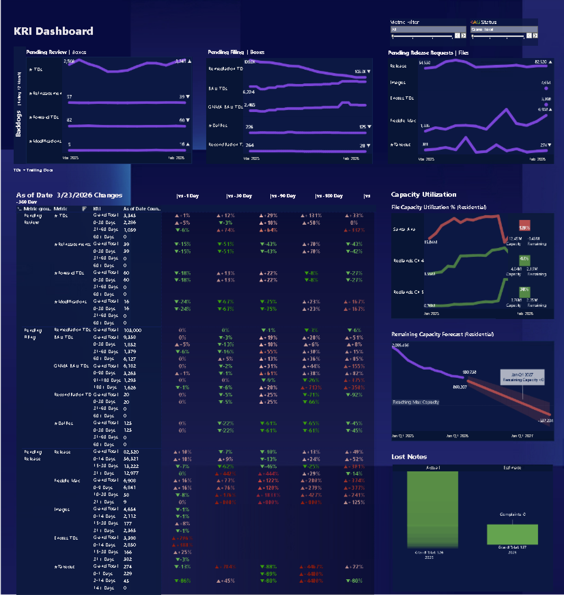

Operational Risk & Remediation Dashboards
This project shows how data can be used to identify operational risk, monitor backlog health, and support remediation planning through clear, decision-oriented dashboards.
It combines two complementary views: a KRI dashboard for ongoing risk monitoring and a remediation dashboard for tracking whether document transfer targets can be achieved within a fixed deadline.
KRI Dashboard
KRI stands for Key Risk Indicator. This dashboard was designed to help teams monitor backlog behavior over time and quickly identify where risk is increasing.
- Tracks backlog volume trends across the last 12 months
- Highlights increases and decreases using visual trend indicators
- Compares snapshots across 1-day, 30-day, 90-day, and 1-year timeframes
- Flags backlog increases as undesirable and supports quick red-category review
- Helps managers focus biweekly meetings on the most critical issues instead of reviewing every metric manually
The capacity section shows remaining versus used capacity. When utilization becomes too high, it helps signal operational pressure early. Forecast views extend that insight by estimating when facilities may reach full usage.

Document Remediation Dashboard
This is a hypothetical dashboard created with dummy data to prepare for a client project before kickoff. The scenario focuses on transferring trailing documents to a new third-party provider within a one-year timeline.
- Shows current remediation progress against a fixed deadline
- Compares actual performance against an ideal remediation path
- Helps estimate whether the current transfer rate is enough to reduce backlog to zero
- Quantifies how much additional transfer capacity may be needed if the current pace is insufficient
- Supports planning conversations around operational readiness and execution risk
The goal of this dashboard is not only to report current performance, but also to guide action: whether the team is on track, off track, or needs to accelerate throughput to meet the target.

Note: Example visuals are shown for portfolio presentation purposes.